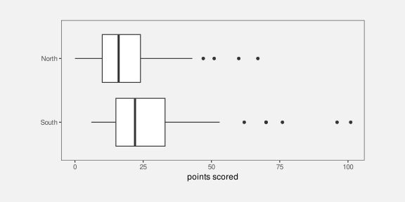
8 Mapping Summaries
In Chapter 3 we described a data visualisation as a mapping that encodes data values as the visual features of a data symbol (Figure 3.1). For example, a bar plot, like Figure 3.2, maps the total number of youth offenders to the lengths of bars.
We also emphasised the importance of the decoding from visual features to data values. For example, the effectiveness of the bar plot in Figure 3.2 relies on our ability to accurately perceive the lengths of the bars, particularly relative to each other.
In the simple scenario of a bar plot, the data values are counts (e.g., Table 3.1), which are encoded as the lengths of bars, which in turn allows us to decode lengths to retrieve the counts (Figure 3.6). Each raw data value (count) is mapped to the length of a bar.
In this section, we explore some data visualisations that are effective because they encode data summaries instead of raw data values.1
PLUS the design-centric extension by Wu and Chang (2024), which teases out design-specific transforms as well (the data prep for a box plot being a good example). These papers provide a formal basis for some of the hand-waving that I do in this section, particularly on decoding to data summaries rather than raw data.
Also “Low-Level Components of Analytic Activity in Information Visualization” Amar et al (2005) Set of 10 data visualisation tasks I like the way these all correspond to a numerical summary.
PLUS of course “stats” in Wilkinson GoG
8.1 Box plots
Figure 8.1 shows box plots of the number of points scored by all teams at Rugby World Cup matches (Table 7.2), with a separate box plot for teams from different hemispheres. This is an effective data visualisation for comparing the distributions of points scored between hemispheres because we are able to easily see differences between the median values of the countries (the thick vertical lines) and differences between the interquartile ranges of the countries (the horizontal rectangles). For example, we can see that the median points scored by southern hemisphere teams is larger than the median for northern hemisphere teams and the interquartile range of points scored is also wider for southern hemisphere teams.
Box plots are quite different from bar plots and dot plots because the data symbol is a much more complicated shape: there is a vertical line to represent the median, a rectangle to represent the interquartile range (lower quartile to upper quartile), and horizontal lines to represent the extremes of the data values, from the the quartiles to the minimum and maximum values. Points are also included for “outliers” if data values lie further than 1.5 times the interquartile range beyond the quartiles.2
Another important difference with a box plot is that it maps data summaries, rather than raw data values, to visual features of the data symbol (Figure 8.2). For example, the median values are mapped to the horizontal positions of thick vertical lines and the interquartile ranges are mapped to the lengths of horizontal rectangles.
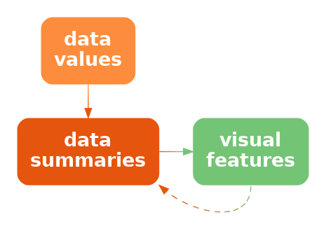
To be explicit, the data values that are being encoded as visual features in Figure 8.1 are not the raw data values in Table 7.2; the values that are being encoded to visual features in Figure 8.1 are the data summaries shown in Table 8.1. These are the values that we can decode from the boxplots in Figure 8.1.
| minimum | lower quartile | median | upper quartile | maximum | |
|---|---|---|---|---|---|
| South | 6 | 15 | 22 | 33 | 101 |
| North | 0 | 10 | 16 | 24 | 67 |
Figure 8.1 is effective for allowing us to compare summaries like the medians between different hemispheres because, although the box plot data symbol is relatively complicated, a box plot still just encodes the data summaries to simple visual features. We know from Chapter 3 that position and length are effective for decoding the data summaries from the visual features (Figure 8.2).
Notice how, even though Table 8.1 contains very few values, it is much easier to perceive the differences between the two rows of values using the data visualisation in Figure 8.1 rather than the table of values in Table 8.1. Once again, we can see the power of mapping values to basic visual features. The only differences from previous sections is that we are mapping data summaries rather than raw data values and we are mapping to the visual features of a more complicated data symbol.
A box plot is effective at conveying information about the distribution of data values because it maps data summaries about the distribution, like the median and interquartile range, to basic visual features.
8.2 Visual summaries
Figure 8.3 shows stacked dot plots of the number of points scored by countries from the different hemispheres in Rugby World Cup matches.3 This data visualisation uses the same data as Figure 8.1, but it maps raw data values rather than data summaries and it uses much simpler data symbols (data points). This data visualisation encodes the number of points scored maps as the horizontal position of a data point and it encodes the hemisphere as the vertical position of a data point.
Because this data visualisation encodes raw data values as visual features, it is possible to decode raw data values from the visual features (Figure 3.6). For example, it is possible to see that the lowest score (zero points) for a northern hemisphere team ocurred twice. It is also possible to see that there are scores that have never occurred in any matches: 1, 2, 4, and 5. These features are not visible in the boxplots in Figure 8.1.
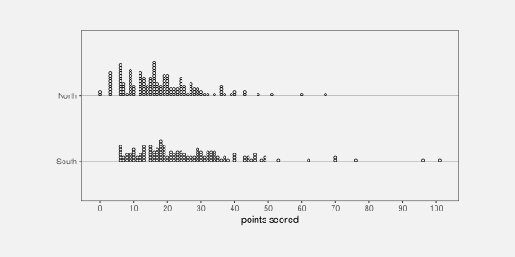
The fact that we can decode raw data values from a dot plot is not news. That is easy because we have encoded raw data values as accurate visual features (see Section 3.7). However, Figure 8.3 also demonstrates that, in addition to decoding raw data values from visual features, our visual system allows us to decode data summaries from visual features.
For example, we can see that the southern hemisphere teams score slightly more points on average than the northern hemisphere teams; the data symbols for southern-hemisphere teams appear shifted to the right of the data symbols for northern-hemisphere teams. In other words, we can perceive visual summaries; we can perceive data summaries from collections of visual features. For example, we can visually average the positions of the data points.
In Figure 8.3, we have encoded raw data values as visual features, which has enabled us to decode raw data values from individual visual features. In addition, visual summaries of the visual features enable us to decode data summaries from collections of visual features (Figure 8.4).4
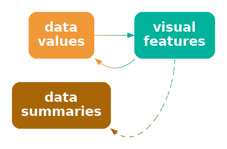
A dot plot is effective not just for perceiving raw data values, but also for perceving data summaries like clusters and outliers, and central tendency and spread.
8.3 Case study: Histograms
Figure 8.5 shows a histogram of the number of points scored by Tier One nations at the Rugby World Cups (Table 7.2). A histogram is similar to a box plot in two ways: a histogram is a data visualisation that can be used to convey the distribution of a variable; and a histogram is a data visualisation that maps data summaries, rather than raw values, to visual features (Figure 8.2).
However, a histogram differs from a box plot in two main ways: the data symbol for a histogram is simpler than a box plot, because it consists of just rectangles or bars; and the data summaries for a histogram are more complicated than those for a box plot.
The raw data values for the histogram in Figure 8.5 are the points scored in each game by each country (Table 7.2). To get the data summaries for the histogram, the raw data values are binned; we break the range of the data into equal-sized intervals and count how many data values lie in each interval. The centre of each interval is then encoded as the horizontal position of a bar and the count of data values in each interval is encoded as the length of a bar.
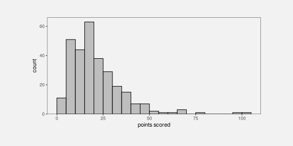
To be explicit, the values that are being mapped to visual features in Figure 8.5 are not raw data values, but data summaries—intervals and counts—as shown in Table 8.2.
| interval | 0-5 | 5-10 | 10-15 | 15-20 | 20-25 | 25-30 | 30-35 | 35-40 | 40-45 | 45-50 | 50-55 | 55-60 | 60-65 | 65-70 | 70-75 | 75-80 | 80-85 | 85-90 | 90-95 | 95-100 | 100-105 |
| count | 11 | 51 | 44 | 63 | 38 | 29 | 19 | 15 | 7 | 7 | 2 | 1 | 1 | 3 | 0 | 1 | 0 | 0 | 0 | 1 | 1 |
As with a box plot, encoding data summaries as accurate visual features means that we can easily decode data summaries from the visual features. For a histogram, this means that we can easily compare the lengths of the bars, which means we can easily compare the relative counts of data values within each interval. For example, the longest bars represent the intervals that contain a relatively large count of data values, which tells us about the mode of the data (or the number of modes in the data). In Figure 8.5 we can see that the largest number of data values occur around 15 to 20 points and we can see that the number of data values in each interval drops more rapidly above the highest bar than below the highest bar. The latter tells us about the spread and/or skewness of the data.
A histogram is effective at conveying information about the distribution of data values because it maps data summaries to basic visual features and those data summaries can be compared to provide information about the distribution of the data.
8.4 The dangers of summaries
The benefit of a data visualisation that encodes data summaries as visual features is that it allows us to decode data summaries very easily. For example, although we can perceive a general idea of central tendency from the dots in Figure 8.3 (see Section 8.2), it is much easier and more accurate to perceive median values from the thick vertical lines in Figure 8.1.
The flipside is that a data visualisation that encodes data summaries as visual features is not effective for decoding raw data values. For example, we cannot see from the box plot in Figure 8.1 that the scores 1, 2, 4, and 5 never occurred, while this is clear from Figure 8.3 because the dot plot does map the raw data values to data symbols.
Box plots and histograms are not effective at conveying raw data values because they do not map raw data values to data symbols.
Another point to consider with a data visualisation that is based on data summaries is whether the data summaries provide reasonable summaries of the data.5 For example, Figure 8.6 shows box plots of the number of points conceded by each team in Rugby World Cup games. The box plot for southern hemisphere teams suggests a unimodal distribution with a slight right skew.
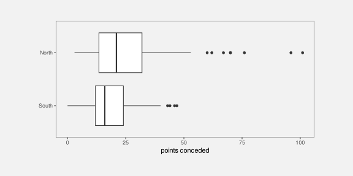
However, the dot plots in Figure 8.7 tell a different story. This data visualisation shows some evidence that the number of points conceded by southern-hemisphere teams may be bimodal, with some teams only conceding very few points (0, 3, or 6) in a number of games. The data summaries for a box plot assume a unimodal distribution, so a box plot will only ever tell a unimodal story, and that is only reasonable if the data are unimodal.
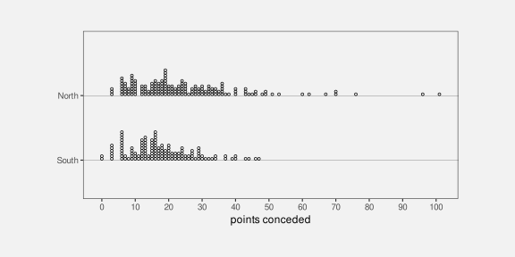
A data visualisation that is based on data summaries can only be effective if the data summaries are sensible summaries of the data.
A box plot is not effective if a five-number summary is not a sensible summary of the data values.
A further complication arises with histograms because we have to choose the intervals that are used to calculate the data summaries and that choice can have a large influence on the data summaries. For example, Figure 8.8 shows a histogram of the same data that we used for Figure 8.5, but with a greater number of narrower intervals. This visualisation tells a slightly different story than Figure 8.5. The most common score is now 6 points (rather than between 15 and 20 points) and we see features like gaps at 1, 2, 4, and 5 points and a stronger suggestion of bimodality. There are also point totals that appear strangely low, like 11 and 14.
Unlike a box plot, where the data summaries are essentially fixed calculations, for a histogram we get to choose the data summaries to some extent, which means that we get to choose the story that the data visualisation tells. Figure 8.5 tells a simpler story, but Figure 8.8 tells a story that includes some important details.
When using a histogram for exploring a data set, it is a good idea to try out more than one choice of intervals in order to avoid missing an important story. When using a histogram to present a story about a data set, there is a responsibility to present a story that does not exclude important details.
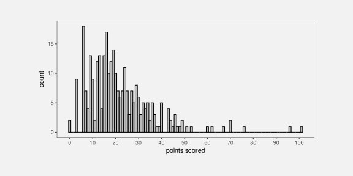
8.5 Case study: How charts lie
In this document, we assume that the purpose of a data visualisation is to faithfully and honestly encode data values and the goal is to produce a data visualisation that provides the most effective decoding of visual features (see Section 1.3).
Nevertheless, less honest representations of data can also be described in terms of mappings, particularly mappings of data summaries.
For example, … Figure 8.96 This does not encode the raw data as the lengths of the bars, but the raw data - 34. The top rate under Obama would be 39.6. Also does not help that the y-axis scale is not shown!
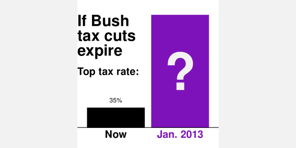
A data visualisation that encodes distorted data or one that leaves out an important subset of the data is encoding unhelpful values to visual features. It is only then possible to decode from visual features to unhelpful data values.

8.6 Simplification
deliberately losing information (e.g., luminance scale for quant)
“Why Shouldn’t All Charts Be Scatter Plots? Beyond Precision-Driven Visualizations” Bertini et al (2021) Claims that ordinal comparisons more common in practice than quantitative comparisons (?)
This nice quote …
Graphics are for comparison - comparison of one kind or another - not for access to individual amounts. (Tukey 1993)
… points out that reading individual values off a plot is not usually the point of a data vis, though it is still a precursor to making a comparison. In some ways, ordinal comparisons are more important than interval or ratio?
8.7 Case study: Heatmaps
Heatmaps are a common way of representing three-dimensional data where two of the data variables are either qualitative or have been measured on a regular grid. The latter two variables naturally map to horizontal and vertical position to produce an array of rectangles, while the third variable maps to colour (see Figure 1.2).
The mappings from data values to visual features for a heatmap are …
colour is not quant but can convey trends
using luminance for quant, but not trying for accurate decoding of individual data values, BUT mention effectiveness of luminance in heatmap for ensemble perception of regions?
get contrast effect but again not typically trying to match cells
get regions/shapes of colour => higher-level structures
talk about colour palettes that have deliberate colour boundaries to emphasise structure - combination of order and category
8.8 Cognitive load
On page 46 of his book “How the World Really Works” (Smil 2022), Vaclav Smil writes that:
“rising food production reduced the malnutrition rate from 2 in 3 people in 1950 to 1 in 11 by 2019”
In order to comprehend the change in malnutrition rate, we are required to compare “2 in 3” to “1 in 11”. This requires mental effort to calculate the ratios or fractions and then compare them. It is easier to compare the rates if we hold the denominator constant, comparing “2 in 3” to “2 in 22”. It is easier still if we calculate the fractions, comparing 0.667 to 0.091. And it is easier still to compare those fractions visually (Figure 8.11).
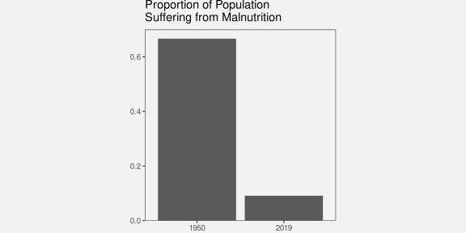
The point is that we can reduce the cognitive load that is required of the viewer if we make the mental calculations that are required easier. We can reduce the cognitive load further if we present the results of the calculation directly and even further if we encode the results of the calculation as simple visual features.
Conversely, we can add to the cognitive load if we make the visual calculations harder. For example, Figure 8.12 shows a bar plot of the original “2 in 3” versus “1 in 11” data values. We now need to perceive the proportion of blue bars relative to red bars and compare those proportions, which is clearly more work than just comparing the two bars in Figure 8.11.
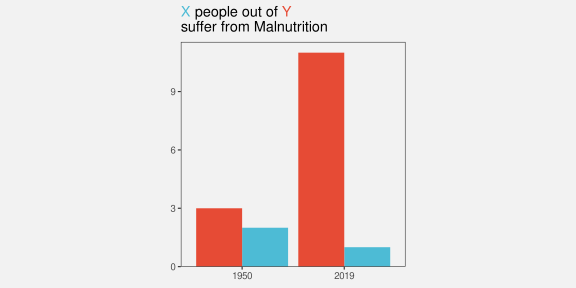
We ideally want to present data in a way that imposes the least cognitive load on the viewer. In terms of Section 2.9, we want to present the viewer with simple visual tasks.
The best data visualisation will be different for different questions of interest, but if the question of interest involves comparing data summaries, then one way that we can make the viewer’s life easier is by calculating summaries of the data and encoding data summaries as visual features, rather than encoding raw data values and asking the viewer to perform visual summaries.
It is possible in some cases to rely on visual summaries, but we need to be careful not to set a visual task that requires too much mental effort.
8.9 Summary
Data summaries, such as measures of central tendency, measures of variability, and tables of counts, provide information about the distribution of a set of data values.
Some data visualisations, like box plots and histograms, are effective because they map data summaries to visual features. This makes it easy to perceive and compare data summaries.
Care must be taken to use data summaries that appropriately summarise the data values.
When we map raw data values to visual features, like in a dot plot, the perception of individual visual features allows us to perceive and compare raw data values, but, in addition, visual summaries of collections of visual features allow us to perceive and compare data summaries.
A box plot that maps data summaries to visual features is more effective for perceiving data summaries than a dot plot that relies on visual summaries. However, a dot plot is more effective for perceiving raw data values.
Smil, Vaclav. 2022. How the World Really Works: The Science Behind How We Got Here and Where We’re Going. New York: Viking.
Wilkinson, Leland. 1999. “Dot Plots.” The American Statistician 53 (3): 276–81. https://doi.org/10.1080/00031305.1999.10474474.
MUST make reference to the Information Visualization Reference Model of Card et al (1999) that differentiates data transforms from visual mappings from view transforms (the last particularly for interactive graphics?)↩︎
Need to acknowledge that there are many variations, even on the simple box plot, e.g., notches, definitions of the box, let alone violin plots, etc.↩︎
Need some references to articles about ensembles in data vis lit (ideally NOT the scatter plot one cos want to use that later for scatter plots). ALSO must relate this to Gestalt section in visual model ?↩︎
Cite Anscombe’s quartet and the dinosaur one.↩︎
This is a reproduction of a chart from Alberto Cairo’s “How Charts Lie” (p12-13), which itself was a reproduction of a chart shown by Fox News. (plus mention other classic how charts lie books like Huff’s How to Lie With Statistics ?) Also link to Wilke’s Principle of Proportional Ink?↩︎